Before the model, the questions: who actually beats their teammate, does edge cost reliability, and which circuits misbehave.
Every feature in the model started as a question asked of the raw results — filtered to the 2015–2024 seasons, where car and data quality are directly comparable. Two drivers arguments run through this notebook: isolate a driver's contribution from the car underneath them, and check whether the track itself explains the chaos we see.
A driver's raw finishing position is mostly the car. The only clean control available in the data is a same-car, same-race comparison — so every metric here is a driver's result measured against their own teammate, not against the field.
Average finishing-position delta versus teammate, restricted to drivers with 50+ shared races so the sample is trustworthy. Negative means ahead of the teammate on average.
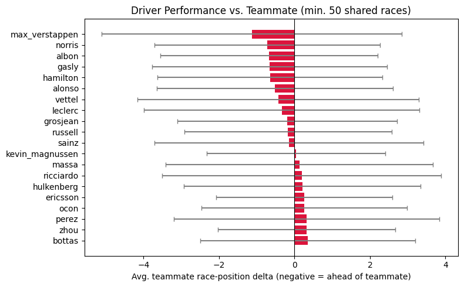
Verstappen leads the field at −1.13 positions per race versus his teammates across 209 shared races, ahead of Norris (−0.72) and Albon (−0.68). The error bars are wide relative to the deltas themselves — race-to-race variance is large enough that a single race tells you almost nothing about who the better driver is.
Raw delta rewards drivers who get lucky as much as drivers who are actually better. Dividing outperformance by its own standard deviation — a driver-level Sharpe ratio — down-weights edges built on high variance.
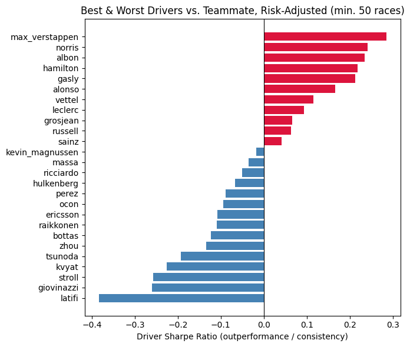
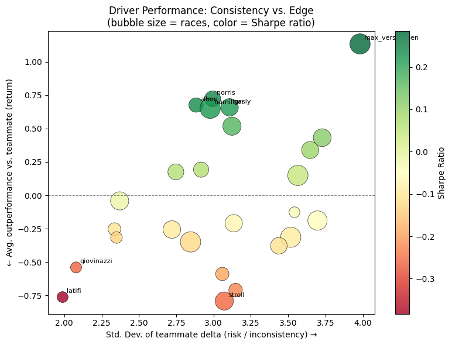
The ranking barely moves versus raw delta — Verstappen, Norris, Albon, Hamilton, and Gasly hold the top five either way — which says the top group's edge is real, not a variance artifact. The bottom of the table shifts more: Latifi's poor average delta is compounded by high inconsistency, giving him the worst Sharpe ratio in the sample.
DNFs are split into driver-fault (accidents, collisions, spins) and mechanical causes, using status codes cross-checked against the existing is_problematic flag. The question: does an aggressive driver who out-races their teammate pay for it in reliability?
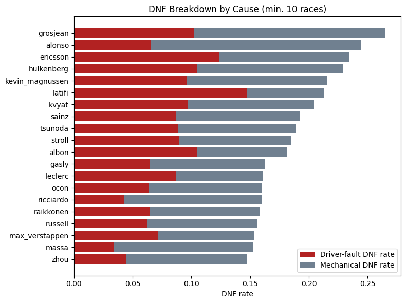
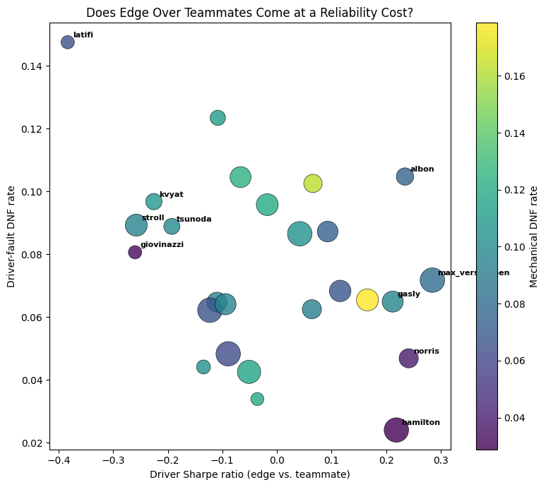
No — the opposite. Sharpe ratio correlates -0.31 with driver-fault DNF rate, and variance itself correlates -0.41. The drivers with the biggest, most consistent edge over their teammates (Hamilton, Norris, Verstappen) also crash out the least. Reading this causally would be a mistake — car reliability and team-level risk tolerance sit underneath both variables — but there's no sign here that beating your teammate requires taking on driver-fault risk.
Splitting each driver's teammate-delta into a qualifying component and a race component separates raw pace from race-day execution — overtaking, strategy, tire management.
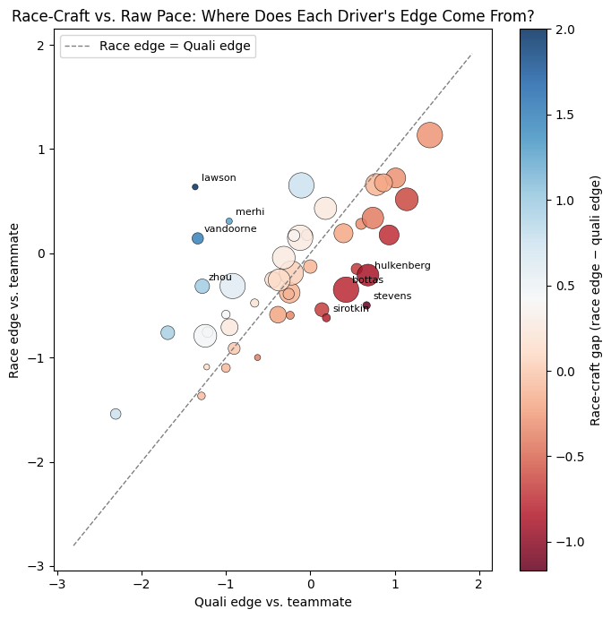
Most drivers sit close to the diagonal — qualifying edge and race edge move together, which is expected since grid position mechanically constrains the race. The interesting cases are the ones furthest off the line: drivers whose race result consistently over- or under-delivers relative to where they qualified are the ones actually gaining or losing positions on track, rather than in the garage.
Races are bucketed into weak/mid/strong car tiers using constructor_form, keeping only drivers with 5+ races in both the weak and strong tier. This tests whether a driver's edge over their teammate is stable, or whether it only shows up when the car is (or isn't) competitive.
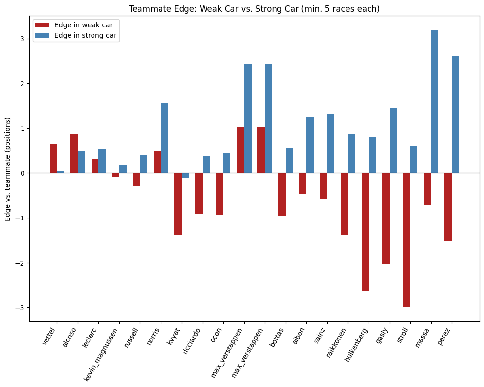
Verstappen's edge is essentially flat across car quality — he beats his teammates by a similar margin whether the car is strong or weak. Others swing hard: several drivers who are competitive or even ahead in a weak car fall behind once the car becomes a front-runner, which reads as a midfield-scrapping skill that doesn't transfer directly to fighting for wins.
Circuits are labeled by dominant characteristic — technical, hard-to-overtake, high-weather-risk, or balanced — using percentile thresholds on the circuit's own feature columns, then teammate edge is recomputed per track type.
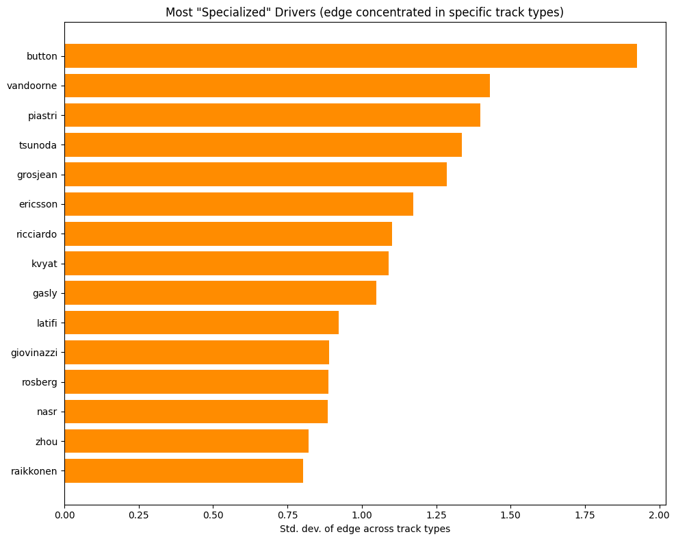
Highest variance of edge across track types — these drivers are strong in some conditions and weak in others.
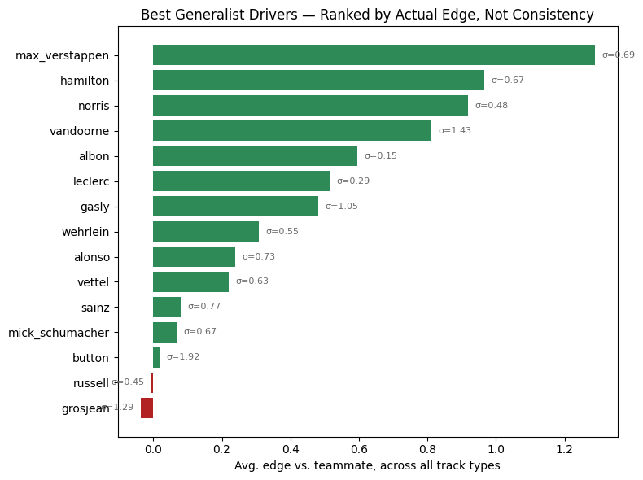
Ranked by actual average edge, not consistency — sigma shown per bar for reference.
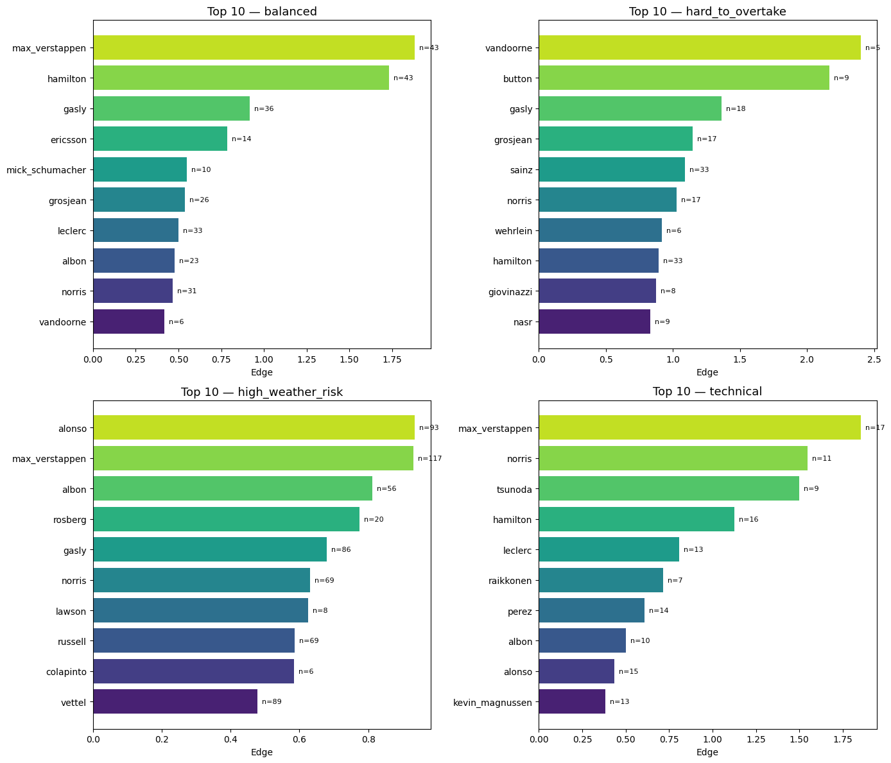
Verstappen and Hamilton show up at or near the top in three of the four track-type buckets — their edge isn't conditional on circuit character. Button and Vandoorne sit at the opposite extreme: high variance across track types with a small sample, more likely an artifact of limited races than a real specialization signal.
Each circuit is fingerprinted by its average technicality, weather index, weather volatility, overtaking difficulty, and track-chaos factor, then correlated against its DNF rate (minimum 5 races per circuit, n=48).
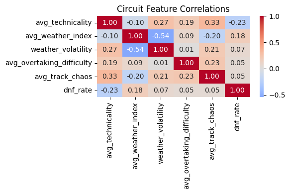
None of the five candidate features reach significance at this sample size. Technicality has the strongest relationship (r = −0.23, p = 0.12) — more technical circuits trend toward slightly fewer DNFs, not more. Weather index is next (r = 0.18, p = 0.23), directionally the "more weather risk, more chaos" relationship used in the simulator, but not something 48 circuits can confirm on its own.
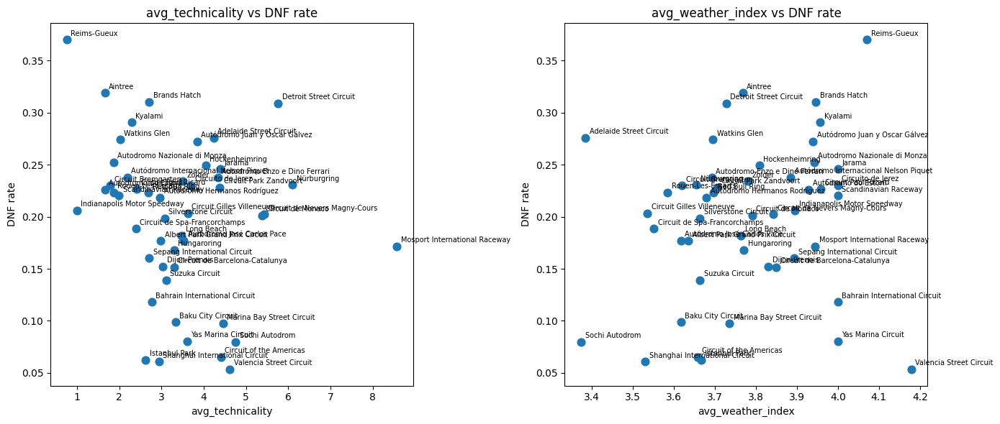
The scatter makes clear why: short-lived street and one-off circuits (Reims-Gueux, Aintree, Brands Hatch, Detroit) sit at the extremes with only a handful of races each, pulling on the correlation without enough data to trust individually. Modern permanent circuits cluster much more tightly in the middle of both plots.